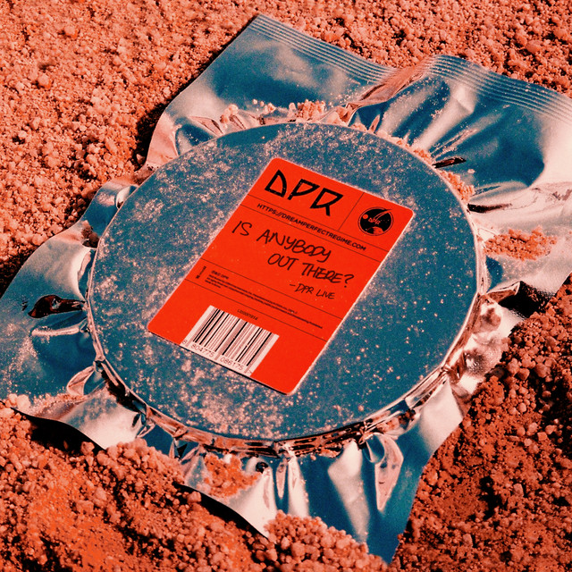

Is Anybody Out There?
- 1.Here Goes Nothing
- 2.Geronimo
- 3.To Whoever
- 4.Out Of Control
- 5.Disconnect
- 6.S.O.S
- 7.Oh Girl
- 8.Kiss Me
- 9.Neon
- 10.Legacy
- 11.No Rescue Needed
- 12.Yellow Crab

DPR LIVE


Is Anybody Out There? es un viaje cósmico de adlibs hipnóticos con melodías que doblan el género y ritmos de trap. El álbum habla sobre el regreso de Live a través de metáforas galácticas como prepararlo de un impacto inevitable a bordo de su nave espacial